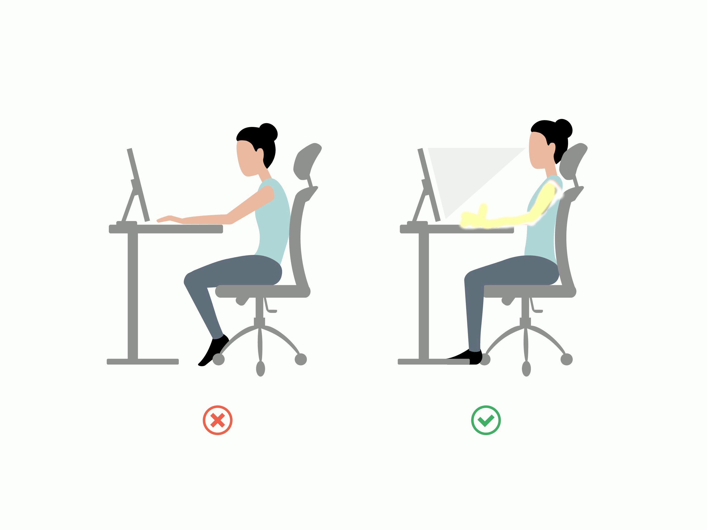

Ergonomiska darba vide ir darba vieta,
kas pielāgota cilvēka vajadzībām, lai nodrošinātu komfortu,
drošību un efektivitāti. Pareizi noregulēts galds,
krēsls, ekrāna augstums un apgaismojums palīdz samazināt nogurumu,
muguras un kakla sāpes, kā arī uzlabo darba kvalitāti.
Ergonomiska vide ir svarīga ne tikai fiziskajai veselībai, bet arī labākai pašsajūtai un produktivitātei ikdienā.
